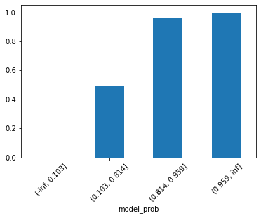
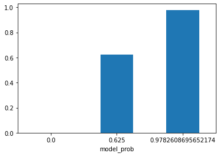
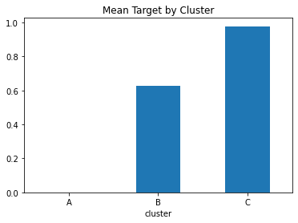

import numpy as np
import pandas as pd
import matplotlib.pyplot as plt
from sklearn.datasets import load_breast_cancerModel Probability Discretisation
We are going to discuss how to discretise (bin) the probabilites that our machine learning outputs.
This notebook is also published on the official feature-engine examples repo.
Loading the Dataset
X, y = load_breast_cancer(return_X_y=True, as_frame=True)
X.head(3)| mean radius | mean texture | mean perimeter | mean area | mean smoothness | mean compactness | mean concavity | mean concave points | mean symmetry | mean fractal dimension | ... | worst radius | worst texture | worst perimeter | worst area | worst smoothness | worst compactness | worst concavity | worst concave points | worst symmetry | worst fractal dimension | |
|---|---|---|---|---|---|---|---|---|---|---|---|---|---|---|---|---|---|---|---|---|---|
| 0 | 17.99 | 10.38 | 122.8 | 1001.0 | 0.11840 | 0.27760 | 0.3001 | 0.14710 | 0.2419 | 0.07871 | ... | 25.38 | 17.33 | 184.6 | 2019.0 | 0.1622 | 0.6656 | 0.7119 | 0.2654 | 0.4601 | 0.11890 |
| 1 | 20.57 | 17.77 | 132.9 | 1326.0 | 0.08474 | 0.07864 | 0.0869 | 0.07017 | 0.1812 | 0.05667 | ... | 24.99 | 23.41 | 158.8 | 1956.0 | 0.1238 | 0.1866 | 0.2416 | 0.1860 | 0.2750 | 0.08902 |
| 2 | 19.69 | 21.25 | 130.0 | 1203.0 | 0.10960 | 0.15990 | 0.1974 | 0.12790 | 0.2069 | 0.05999 | ... | 23.57 | 25.53 | 152.5 | 1709.0 | 0.1444 | 0.4245 | 0.4504 | 0.2430 | 0.3613 | 0.08758 |
3 rows × 30 columns
np.unique(y)array([0, 1])X.groupby(y).size()target
0 212
1 357
dtype: int64When we want to build a model to rank, we would like to know if the mean of our target variable increases with the model predicted probability. In order to check that, it is common to discretise the model probabilities that is provided by model.predict_proba(X)[:, 1]. If the mean target increases monotonically with each bin boundaries, than we can rest assure that our model is doing some sort of ranking.
from sklearn.model_selection import train_test_split
X_train, X_test, y_train, y_test = train_test_split(X, y, train_size=0.60, random_state=50)from sklearn.preprocessing import MinMaxScaler
from feature_engine.wrappers import SklearnTransformerWrapper
from sklearn.linear_model import LogisticRegression
from sklearn.pipeline import Pipeline
features = X.columns.tolist()
lr_model = Pipeline(steps=[
('scaler', SklearnTransformerWrapper(transformer=MinMaxScaler(), variables=features)),
('algorithm', LogisticRegression())
])lr_model.fit(X_train, y_train)
y_proba_train = lr_model.predict_proba(X_train)[:,1]
y_proba_test = lr_model.predict_proba(X_test)[:,1]from sklearn.metrics import roc_auc_score
print(f"Train ROCAUC: {roc_auc_score(y_train, y_proba_train):.4f}")
print(f"Test ROCAUC: {roc_auc_score(y_test, y_proba_test):.4f}")Train ROCAUC: 0.9972
Test ROCAUC: 0.9892Our model is performing very good! But let’s check if it is in fact assigning the examples with the greatest chance to acquire breast cancer with higher probabilities.
To do that, let’s use the EqualFrequencyDiscretiser from feature-engine package.
First, let’s build a dataframe with the predicted probabilities and the target.
predictions_df = pd.DataFrame({'model_prob': y_proba_test,'target': y_test})
predictions_df.head()| model_prob | target | |
|---|---|---|
| 356 | 0.782233 | 1 |
| 556 | 0.993711 | 1 |
| 283 | 0.136180 | 0 |
| 495 | 0.792087 | 1 |
| 364 | 0.951556 | 1 |
from feature_engine.discretisation import EqualFrequencyDiscretiser
disc = EqualFrequencyDiscretiser(q=4, variables=['model_prob'], return_boundaries=True)
predictions_df_t = disc.fit_transform(predictions_df)
predictions_df_t.groupby('model_prob')['target'].mean().plot(kind='bar', rot=45);
Indeed our model is ranking! But the last two groups/bins with greater probabilities are really close to each other. So, maybe after all we just have 3 groups instead of 4. Wouldn’t it be nice if we could use a method that finds the optimum number of groups/bins for us? For this, feature-engine gotcha you! Let’s use the DecisionTreeDiscretiser. As said by Soledad Gali here, this discretisation technique consists of using a decision tree to identify the optimal partitions for a continuous variable, that is what our model probability is.
from feature_engine.discretisation import DecisionTreeDiscretiser
disc = DecisionTreeDiscretiser(cv=3, scoring='roc_auc', variables=['model_prob'], regression=False)
predictions_df_t = disc.fit_transform(predictions_df, y_test)
predictions_df_t.groupby('model_prob')['target'].mean().plot(kind='bar', rot=0);
Very nice! Our DecisionTreeDiscretiser have found three optimum bins/groups/clusters to split the model probability. The first group only contains examples that our model says won’t develop breast cancer. The second one has a 0.625 probability chance of develop a breast cancer and the third cluster has the greatest chance of develop breast cancer, 0.978.
Let’ check the size of each cluster:
predictions_df_t['model_prob'].value_counts().sort_index()0.000000 82
0.625000 8
0.978261 138
Name: model_prob, dtype: int64It’s a common practice to give letters to each cluster in a way that the letter ‘A’ for example will be used to denote the cluster with less probability:
import string
tree_predictions = np.sort(predictions_df_t['model_prob'].unique())
ratings_map = {tree_prediction: rating for rating, tree_prediction in zip(string.ascii_uppercase, tree_predictions)}
ratings_map{0.0: 'A', 0.625: 'B', 0.9782608695652174: 'C'}predictions_df_t['cluster'] = predictions_df_t['model_prob'].map(ratings_map)
predictions_df_t.head()| model_prob | target | cluster | |
|---|---|---|---|
| 356 | 0.978261 | 1 | C |
| 556 | 0.978261 | 1 | C |
| 283 | 0.000000 | 0 | A |
| 495 | 0.978261 | 1 | C |
| 364 | 0.978261 | 1 | C |
predictions_df_t.groupby('cluster')['target'].mean().plot(kind='bar', rot=0, title="Mean Target by Cluster");
The same figure as the one above, but now with letters to denote each cluster.
To finish, let’s see what are the boundaries of each cluster. With that information, once we apply the model to obtain the probability of develop breast cancer for a new sample, we can classify it into one of the three cluster we created with the DecisionTreeDiscretiser.
predictions_df_t['model_probability'] = predictions_df['model_prob']
predictions_df_t.head()| model_prob | target | cluster | model_probability | |
|---|---|---|---|---|
| 356 | 0.978261 | 1 | C | 0.782233 |
| 556 | 0.978261 | 1 | C | 0.993711 |
| 283 | 0.000000 | 0 | A | 0.136180 |
| 495 | 0.978261 | 1 | C | 0.792087 |
| 364 | 0.978261 | 1 | C | 0.951556 |
predictions_df_t.groupby('cluster').agg(lower_boundary = ('model_probability', 'min'), upper_boundary=('model_probability', 'max')).round(3)| lower_boundary | upper_boundary | |
|---|---|---|
| cluster | ||
| A | 0.000 | 0.467 |
| B | 0.473 | 0.632 |
| C | 0.650 | 0.998 |
So, if a new sample gets a probability of 0.72 it will be assigned to cluster C.
References
To learn more about variable discretization tecniques, please go to https://trainindata.medium.com/variable-discretization-in-machine-learning-7b09009915c2.